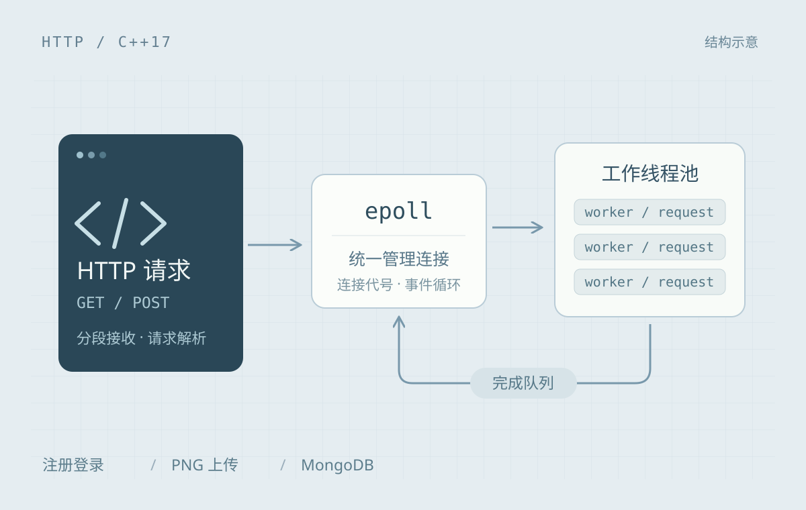
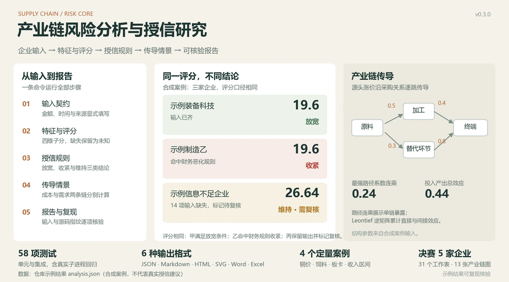
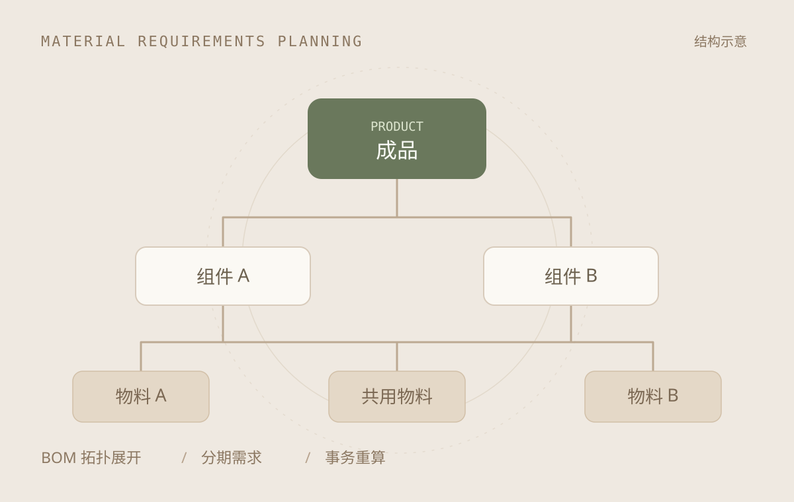
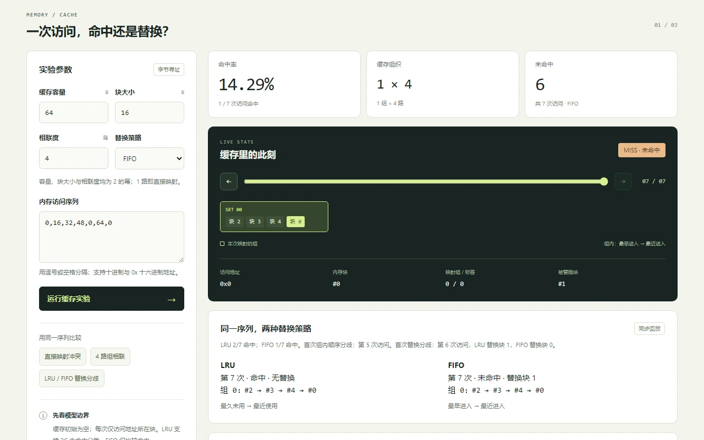
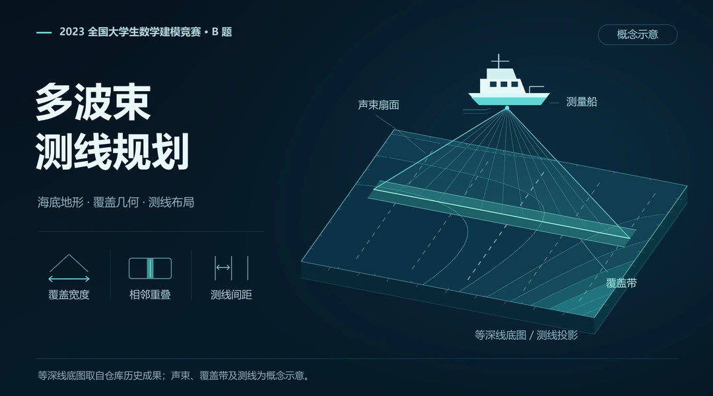
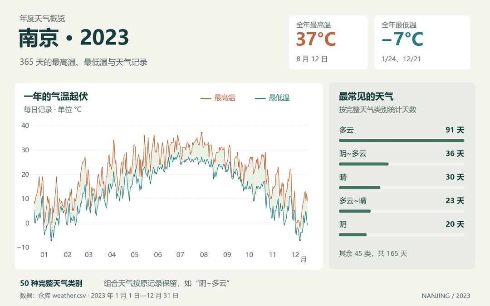
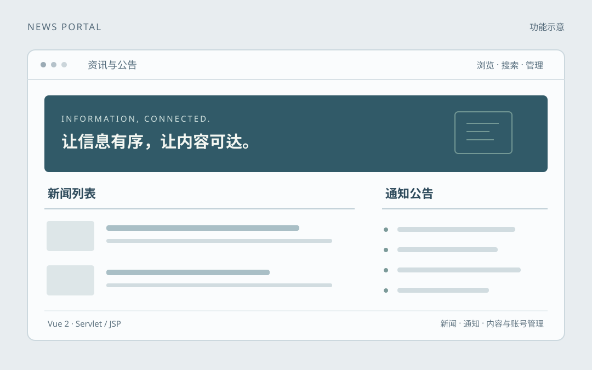

01 服务端开发
C++ HTTP 服务器
从连接建立到响应返回，
走通一次 HTTP 请求的完整路径。
epoll 管理连接，线程池处理请求。支持分段请求解析、注册登录与 PNG 上传。
查看源码与说明
SELECTED WORK
从连接管理到数据计算，
在具体问题里理解原理。
01 服务端开发
从连接建立到响应返回，
走通一次 HTTP 请求的完整路径。
epoll 管理连接，线程池处理请求。支持分段请求解析、注册登录与 PNG 上传。
查看源码与说明


04 交互实验
在系统原理实验室里，调整参数、逐步观察 Cache 替换、地址翻译与 TCP Reno。
同一组访问序列，也能对照 LRU 与 FIFO。

MORE TO EXPLORE
一些从问题和数据出发的尝试。

数学建模 / 团队作品
2023 数模国赛 B 题。结合覆盖几何与测线约束，探索海底地形的测量方案。

数据可视化
整理南京 2023 年的 365 天天气记录，用月度图表与年度词云观察四季。

Web 应用
从新闻通知展示到内容与账号管理，连接 Vue 前台和 Servlet/JSP 后台。
NOTES & THOUGHTS
记录计算机原理、数学问题，和那些终于想明白的瞬间。